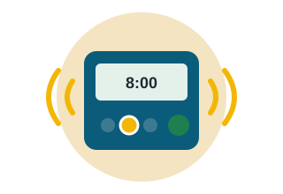
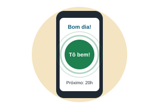
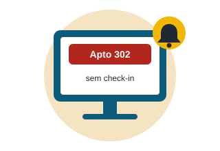
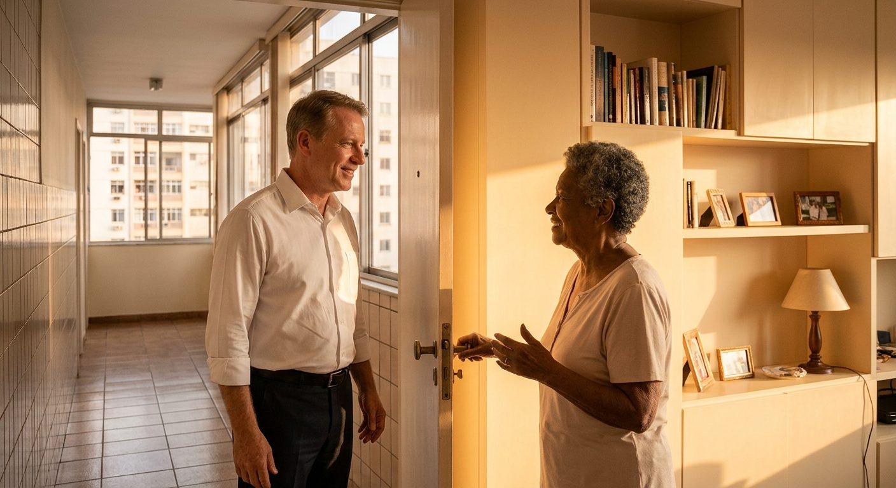
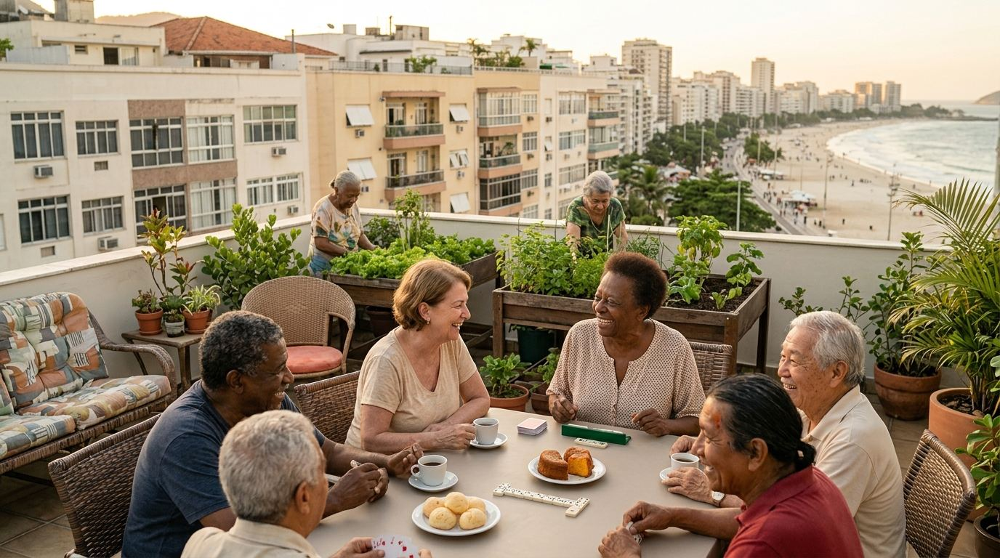

Um toque por dia para dizer: tô bem.
O TôBem ajuda idosos que moram sozinhos em Copacabana. De manhã e à noite, um toque avisa que está tudo certo. Se o aviso não chega, o porteiro vai conferir.
Veja como funcionaO problema
Uma vizinha do nosso prédio caiu dentro de casa. Estava consciente e se mexia, mas não conseguia se levantar. Como morava sozinha, ninguém percebeu. Ela só foi encontrada no dia seguinte, quando as amigas estranharam que não atendia o telefone.
- Muitos idosos moram sozinhos.
- Quando algo acontece, ninguém percebe logo.
- O socorro chega tarde demais.
Como funciona
Quatro passos simples, duas vezes por dia. O idoso não precisa digitar nada.
-

1Lembrete
Às 8h e às 20h, o aparelho na casa do idoso acende uma luz e toca um bipe curto.
-

2Um toque
O idoso aperta o botão verde "Tô bem!", no aparelho ou no celular. Pronto.
-

3Aviso
Se o toque não vier em 1 hora, a portaria recebe o aviso de qual apartamento conferir.
-

4Verificação
O porteiro ou o síndico bate na porta e registra: está tudo bem ou precisou de ajuda.
O aparelho também mede a temperatura e a umidade da casa e avisa quando está quente demais.
O app
Uma tela, um botão. Quem cuida acompanha tudo pelas cores do semáforo.
Bom dia!
Toque no botão para avisar que está tudo bem.
Próximo check-in: 20h
Exemplo da tela do app
-
OK
No visor do aparelho: Tudo bem
Check-in em dia e casa com temperatura agradável. Ninguém precisa fazer nada.
-
ATENÇÃO
No visor do aparelho: Faca check-in
Chegou a hora do check-in, ou a casa está ficando quente. O aparelho lembra o idoso com uma luz e um bipe curto.
-
PERIGO
No visor do aparelho: SEM CHECK-IN 13h
Passou 1 hora do horário sem check-in. A portaria é avisada para conferir o apartamento.
Simule o aparelho
Arraste os controles e veja o que o aparelho mostraria. As regras são as mesmas do dispositivo real.
25.0C 60%
Tudo bem
Impacto

Tempo até alguém conferir se o idoso está bem
Meta: 95,8% menos tempo de espera.
- Percentual de check-ins feitos no horário, por semana.
- Percentual de alertas atendidos dentro do prazo.
Objetivos de Desenvolvimento Sustentável da ONU
-
3
Saúde e bem-estar
Socorro mais rápido depois de quedas e mal-estar, e menos isolamento.
-
10
Redução das desigualdades
O idoso continua morando sozinho, com autonomia e segurança, sem precisar se mudar.
-
11
Cidades e comunidades sustentáveis
O prédio vira uma rede de cuidado com quem já está lá: portaria, síndico e vizinhos.
Equipe
Somos estudantes de Engenharia de Software da FIAP, no Rio de Janeiro. O TôBem nasceu de um caso real no prédio de um de nós.
-
Gabriel Almeida
RM 575525
-
Anne Bortoli
RM 574750